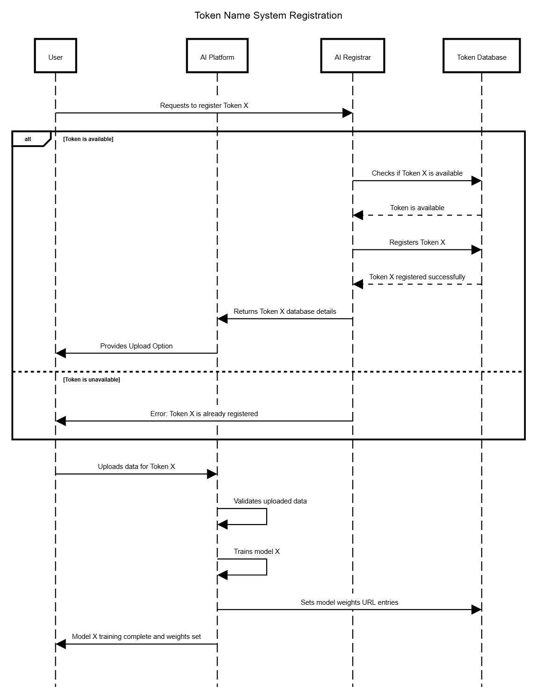
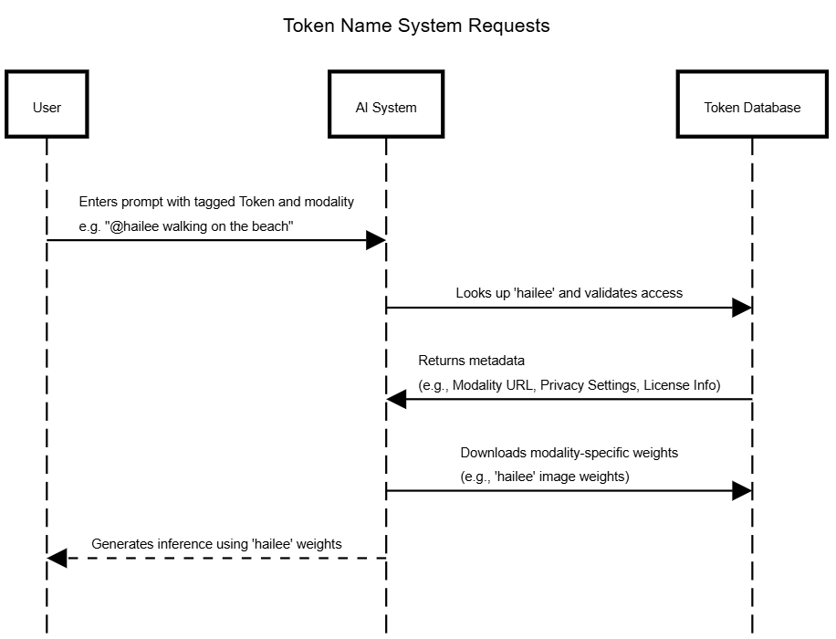

Today's AI systems have a problem: They just don't know very much.
Sure, they can help you to code, tell you about historical figures, make videos of dogs on skateboards or generate silly songs.
But as soon as you start asking for your best friend's birthday or to hear your mother's voice, the fun stops.
They're just not very good with niche, unscrapable data. They're also not very good with respecting the rights of the things they're trained on.
When we drafted the first business plan for LetzAI in 2023, we wanted to solve that and defined 2 focus areas:
As we were developing our first MVP, a few ideas came up. We ended up grouping them under a concept that we called "Token Name System," or TNS for short.
Recently I read this paper about ATCP/IP (an AI TCP/IP protocol) by Andrea Muttoni and Jason Zhao, and it reminded me that I had never publicly shared any of the ideas around TNS before.
So here’s a short intro on TNS, the Token Name System.
An AI Protocol Layer similar to the Domain Name System DNS.
What is a “Token”?
In the real world, two people or objects can have the same name. A person in the US may be born with the same name than a person in Germany. If you ask an AI to generate an image of “John Smith,” then there is a very high chance that the result will not be what you expected. The result will also vary from one AI to another.
There are trillions of unique objects in the world and gazillions in the entire universe. Your own name, the name of your dog, your favorite dress, or digital things like your Instagram username are just a few examples. The sum of all names and their meaning is more than any modern AI system could ever access by scraping the internet alone. However, a perfect AI would need to do just that: be able to address every non-fungible object by a unique name—its Token.
TNS aims to solve this problem.
To clarify: TNS Tokens have nothing to do with crypto tokens or blockchain. In TNS, a Token is simply a unique word or string that acts as an instruction for generative AI systems.
When referenced within the TNS protocol, Tokens enable generativ AI tools to retrieve specific information associated with them, while respecting IP and privacy rights of the legal entity or individual that own them.
They are human-readable identifiers passed as part of text prompts to AI systems. Unlike the embedded tokens in large-scale language models (LLMs) such as GPT or T5-XXL—which are numerical representations pre-baked into the model’s parameters—our Tokens exist outside the pre-trained model. They are stored as unique identifiers in a global distributed database to which anybody can add their own Tokens.
Each Token’s main purpose is to store specific fine-tuned weights and to allow for seamless integration with additional privacy and safety options, ensuring that information tied to a Token can only be accessed and used according to the rights and preferences of its owner.
In TNS, LetzAI (or any other platform that allows fine-tuning of AI models, e.g. OpenAI), could act as registrars: These providers register unique names (the Tokens) for their users and link weights to Tokens. The Token itself can be an abstract number, like a UUID, but its main purpose is to serve as a human-readable text string, like a web domain inside of a text prompt.
Training Models as Encryption
When you train model weights using your data and link those weights to a unique Token, you’re essentially performing a form of encryption.

On TNS: The resulting model (or its weights) are public and can be accessed by AI systems during inference. Your original data stays private and exclusively accessible to you and, in the case of training, the registrar of your choice. During inference, the AI system downloads only the public model weights associated with the Token. The private data—whether it’s a single image, a voice snippet, an MP3 file, or a collection of Tokens—remains entirely secure and inaccessible. The underlying secret “data” can be present in different modalities. To ensure clarity and compatibility among text, audio, image, video, DNA, etc., a modality identifier is required for each Token. You can think of this like A Records in the Domain Name System, which map domain names to IP addresses. Here, modality identifiers help categorize and manage different types of data linked to Tokens.
Diagram for token registration
Of course, it is possible to imagine a version of TNS that doesn't rely on training at all. For example to reproduce an accurate image of a person, many modern system no longer require training methods, but simply take a photo input. It is also imaginable to have simpler database-style text entries.
I consider these as unencrypted options.
Registrars as Trust Anchors
In the TNS framework, Token registrars would play a crucial role:
Today, LetzAI can be thought of as the first and only registrar operating within its own TNS subgraph. Each platform that trains AI models can function as its own registrar, maintaining its own subgraph and storing its own weights. Over time, this could scale to include millions of registrars, each managing their portion of the TNS ecosystem.
It is worth noting as well that besides LetzAI, large players have recognized the opportunity too: For example, in May 2024, OpenAI released a blog article titled “Our Approach to Data and AI,” where they introduced a tool called “Media Manager,” a tool that lets brands manage how they’re represented in OpenAI’s closed system.
An actor in the TNS system can act as registrar which registers token on the Token Database (and trains models), and/or as an inference entity, that accesses the models directly on the database.
The First Prototype
When we drafted the prototype of LetzAI in 2023, we implemented one of the first Token Tagging systems:
Using the @ character in a prompt, users can trigger the unique Token of their model and add their fine-tuned information on the fly.

This idea has since been adopted by many platforms and systems. For instance, RAG integrations use similar mechanisms to retrieve fine-tuned or external data, or ChatGPT’s Custom GPTs also allow users to tag GPTs using @.
However, these Tagging systems most often only function in their own closed ecosystem. In the Token Name System, however, every player works inside the same protocol and uses the global token database, similar to how DNS works.
To register new tokens, the registrar needs to check with the database for availability, and if a token is free, it gets registered.
As that network becomes crowded, rare Tokens are acquired in the same way as domains. They’re created (or sold) first come, first serve. They can be traded, and a sale or transfer can be enforced by IP law.
On the registrar level, this creates a marketplace for Tokens.
A key difference between Tokens and Domains (especially in the IP segment), is that Tokens are stronger correlated to the physical world. What I mean by this is that a Token can directly link to a physical item, like a person. Said person needs to be able to make sure that their model performs well and the added data is genuine. A website in the DNS system in comparison is much more abstract and "optional". An AI Model of a person should in most cases not be abstract and artsy, but authentic. A ruleset for registrars is necessary that prevents abuse in the form of misleading model names for example.
An example of such rules can be found in our LetzAI Terms of Service.
Two Main Challenges
To bootstrap a larger open initiative, more registrars and trusted authorities must come together to store and serve models in a secure and reliable way that respects intellectual property (IP) rights.
Two main challenges exist:
A third more abstract challenge is the question about Token popularity. If billions of Tokens exist, humans will need ways to monitor which ones are the "good" ones. For this purpose either a social solution or a "Google-like" index solution are required.
A notable example of a platform grappling with these issues is Civitai, a large, creative, but unregulated network. While it’s a haven for innovation, it has also become an IP and safety minefield. To address this, Civitai launched a second, more curated platform, Civitai Green, in what could be seen as an act of self-castration.
Civitai has also developed its own internal "TNS system" called AIR (Artificial Intelligence Resource), which assigns a unique URI (Unique Resource Identifier) to every uploaded model. This approach is promising. However, the hard-to-read AIR format feels closer to an “IP address” than a human-readable domain, which could limit its accessibility to non-technical users.
In TNS, every AIR URI would need a simpler, human-readable domain: the Token. This would allow both systems to coexist, combining AIR's functionality with TNS's user-friendly naming structure.
Blockchain’s Role is Limited
The above challenges, in my view, cannot be effectively solved using a censorship-resistant blockchain where transactions are irreversible, and ownership cannot be corrected. This makes blockchain poorly suited for managing IP in dynamic, legal contexts.
However, blockchain and crypto can play a useful role as payment methods for commercial license sales directly over the protocol. The already mentioned ATCP/IP paper introduces interesting mechanics for such use cases, which could complement TNS without making blockchain central to the solution.
Next Steps
A true global Token Name System (TNS) should be built as an open-source protocol, collaboratively maintained by contributors and trusted legal entities. We’ve done something similar before with the internet—creating shared, universal standards. It’s time to consider how we can do it again for AI.
As inspiration for such an effort, here’s an example of the key components a TNS-like system should support:
As a final note: one may think that a TNS-like protocol would limit creative expression or that it would be an effort to control the freedom of AI systems. That assumption is wrong.
The goal of TNS is to empower creators by providing a secure way to add niche, non-scrapable information to AI systems—data that otherwise would not be available for training. Importantly, this protocol enables monetization through royalties and commercial licensing, creating many new opportunities rather than closing doors. Alternative closed systems may exist alongside TNS.
Why Now?
The internet succeeded because it was built on shared standards from the beginning. DNS thrived because it was adopted early, during the internet’s foundational stages.
AI instead is already fragmented, dominated by many closed ecosystems that prioritize proprietary control over interoperability.
Convincing these players to adopt a shared protocol is a monumental challenge.
So we better get to work.